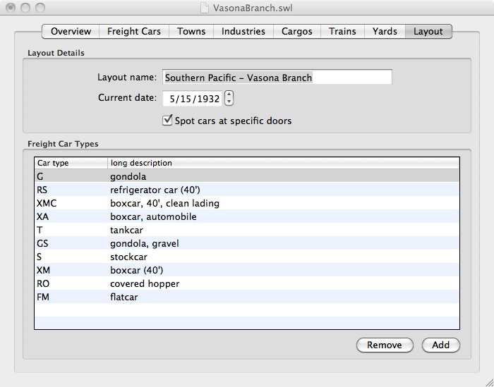

The kind of freight car is important for deciding where each goes. A cannery may only need boxcars of cans and refrigerator cars of fruit, while a cement plant may only need covered hoppers of gravel. To make cars move appropriately on your layout, you tell SwitchList what kind of car each freight car is in the Freight Car tab, and when you create cargo to carry in the Cargo tab, you name the kind of freight car that can haul it.
 Different people may want to name their freight cars differently. Some may want an english description ("boxcar", "flatcar", "gondola"), but others may want to better match what the prototype does. The freight car type names are specified in the table in the Layout tab where you can provide a short form of each name and a longer description of exactly what each kind of car is.
SwitchList starts new layouts out with a few car types defined by the AAR (American Association of Railroads.) AAR car type codes are generally two or three letters; the first letter indicates the rough type of car, and the next two give details. AAR codes have been used throughout the 20th century, so they're appropriate for most model railroads, and many modelers have seen the codes before.
For example, boxcars in the AAR code start with "X". "XM" boxcars are general freight boxcars. "XA" boxcars are "automobile cars" with wider side or end doors, originally designed for hauling individual cars. "XAP" are auto parts cars designed for specially designed racks of parts.
SwitchList's initial set of car types is minimal; you can add new car types based on the AAR types at any time, or can add your own custom classifications to make sure certain groups of cars get certain loads. On my layout, I label cargos of "clean" commodities - fruit and cans for the caneries, for example, as "XMC" to indicate that clean boxcars can be used. I then give my dirtier boxcars the "XM" car type, and the cleaner ones the "XMC" car type. Dirty and worn cars that would never be used for carrying food never appear at the canneries.
Be careful with long car type names; most of the switchlist forms assume these names are short - three or four characters - and may not correctly print longer car type names.
{kind=link}